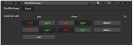

You can rearrange the views in your script using the ShuffleViews node. For example, you can swap the left and right views around in the pipeline, so that Nuke uses the left input for the right eye and vice versa.
| 1. | Select Views > ShuffleViews to insert a ShuffleViews node in an appropriate place in your script. |
| 2. | In the ShuffleViews controls, click add as necessary. |
| 3. | Use the buttons or dropdown menus to select which view to replace with which. For example, to swap the left and right views around, you need to make the following selections: |
• On one row, select left under get, and right under from (“get left from right”). The left view is now replaced with the right view.
• On another row, select right under get, and left under from (“get right from left”).
The right view is replaced with the left view.

If there aren’t enough rows of buttons or dropdown menus on the ShuffleViews node’s properties panel, click the add button to add a row.
To remove unnecessary rows in the ShuffleViews node’s controls, click the delete button next to the row you want to remove.
|
|